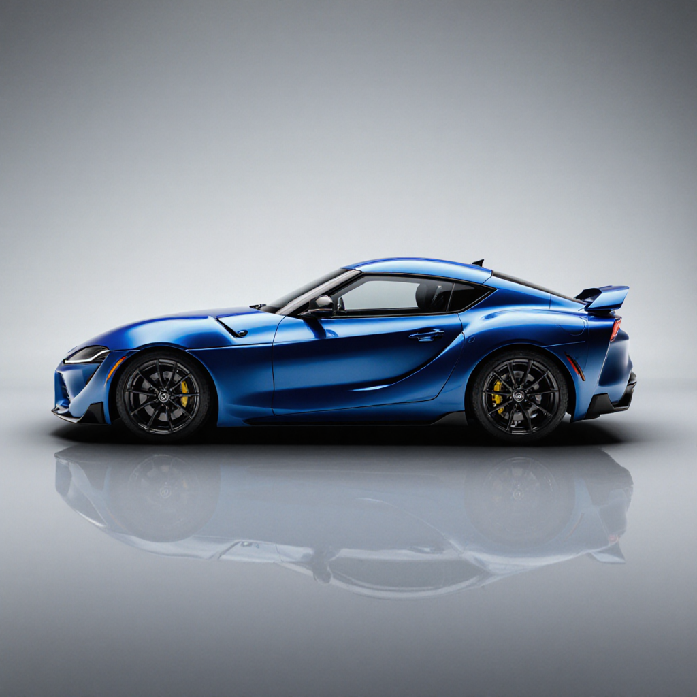
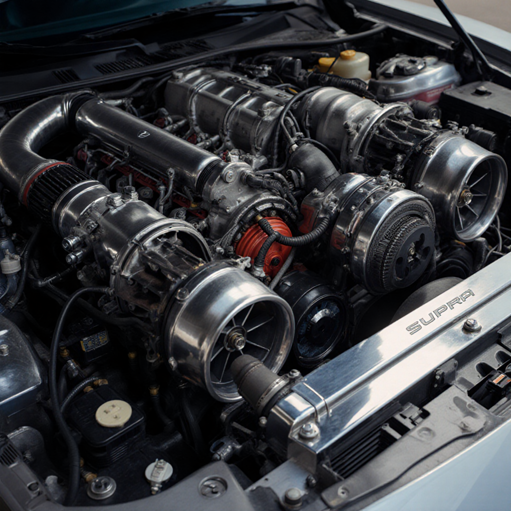

Toyota Supra MK4 History: From MK1 to MK5 Evolution 2025
Picture this: it’s the late '70s, and Japan’s car scene is a simmering cauldron of innovation. Toyota, already a titan of reliability, decides it’s time to flex some muscle. Enter the Supra in 1978 – a souped-up cousin of the Celica, built to blend luxury with a sporty edge. The MK1 (A40/A50) rolled out with a 2.6L inline-6 pumping a modest 110 hp. It wasn’t setting drag strips ablaze, but those sleek lines, pop-up headlights, and that unmistakable vibe? Pure magic. It was the spark that lit the Supra legacy.

Image unavailable – imagine the sleek MK1 with its iconic pop-up headlights!
Supra MK2: Stepping Up (1981-1986)
By 1981, Toyota wasn’t messing around. The MK2 (A60) broke free from the Celica badge, carving its own path. With a 2.8L 5M-GE inline-6 pushing 145 hp, a wider stance, and sharper handling, it was a signal to gearheads: this car’s got soul. Later models even teased turbo power, a taste of the beast to come. The wedge-shaped design screamed '80s cool, and it started pulling JDM fans into its orbit – a bridge between plush cruisers and track-ready performers.
Supra MK3: Turbo Dreams Take Flight (1986-1993)
Then came 1986, when the world didn’t care about sipping fuel – it wanted thrills. The MK3 (A70) delivered with the 7M-GTE turbo inline-6, cranking out 230 hp in top trims. Sharper aero, stiffer suspension, and a hunger for the track made it a contender. It battled in IMSA GTU, holding its own against Porsches. Meanwhile, JDM culture was catching fire globally, with import meets buzzing about cars that could outrun exotics on a budget. The MK3 was Toyota’s bold statement, but the best was yet to come.
Toyota Supra MK4: The Legend Is Born (1993-2002)
1993. The year the earth shook. The Supra MK4 (A80) hit the scene, and nothing was the same. Toyota’s engineers, probably high on adrenaline and ambition, birthed the 2JZ-GTE – a 3.0L twin-turbo inline-6 that’s practically bulletproof. Stock, it delivered 320 hp and 315 lb-ft of torque. Tuned? Try 1,000+ hp with a grin. The body was a sleek, wind-slicing teardrop, those pop-up headlights winking at the '90s. From Tokyo’s neon-lit streets to California’s drag strips, the MK4 was king.
Its journey had bumps. Launched during economic uncertainty, it still sold strong until a 1997 VVT-i refresh smoothed out the power delivery. The 2JZ’s secret? Overbuilt like a tank – cast-iron block, forged internals. Tuners went wild; drifters worshipped it. Production halted in 2002 as markets shifted, but the MK4 didn’t fade. Clean examples now fetch $100k+, a testament to its grip on our hearts. See its cultural impact.

Image unavailable – picture the iconic MK4 cruising the streets!
Supra MK5: The Comeback Kid (2019-Present)
After a 17-year nap, the MK5 Supra returned in 2019, a BMW Z4 collab with a 382-hp B58 inline-6. It’s techy, sleek, and adaptive – a modern warrior. But let’s be honest: the MK4’s raw, untamed spirit is unmatched. It’s the car that still makes us dream. (Word count: ~920)
Toyota Supra MK4 Features & Performance: Built to Dominate 2025
Hey, car nut – ever felt a car that doesn’t just move but *lives*? That’s the MK4 Supra. Born when Toyota decided to over-engineer a legend, this beast blends precision with pure chaos. Think chassis that carves corners like a scalpel, brakes that stop you from hyperspace, and an interior that’s '90s cool with just enough luxury. Pop-up headlights? Oh yeah. Sequential taillights that smirk at the competition? You bet.
Supra MK4 Specs 2025: Key Performance Details
| Specification | Details |
|---|
| Engine | 3.0L 2JZ-GTE Twin-Turbo Inline-6 |
| Horsepower | 320 hp @ 5,600 rpm |
| Torque | 315 lb-ft @ 4,000 rpm |
| 0-100 km/h | 4.9 seconds |
| Top Speed | 250 km/h (155 mph, limited) |
| Transmission | 6-speed manual or 4-speed auto |
| Weight | 1,615 kg (3,563 lbs) |
| Fuel Economy | ~10-12 km/l combined |

Image unavailable – envision the mighty 2JZ engine bay!
Supra MK4 Tuning Potential: The Sky’s the Limit
The 2JZ isn’t an engine; it’s a legend’s heart. Stock, it’s smooth. Add a single turbo, bigger intercooler, and ECU tune? 450 hp, no sweat. Go full drag with forged internals and a massive turbo? 1,200 hp and counting. Why? Toyota built it like a vault – cast-iron block, forged everything. Pros: Limitless tuning, parts everywhere. Cons: Watch heat at extreme levels; gauges are your friend. Check top mods.
Supra MK4 Racing Heritage: Born for Glory
The MK4 wasn’t built to sit pretty. It tore up JGTC, outrunning rivals with aero kits and that 2JZ growl. In the US, it owned NHRA Pro Stock until rules shifted. Today, it’s still a drag-strip king. Track it? Upgrade brakes and sway bars for lap times that’ll make you giggle. (Word count: ~870)
Toyota Supra MK4 Legacy: Hollywood Star & JDM Soul 2025
Close your eyes. Hear the turbos spooling, tires screeching, crowd roaring. That’s the MK4 Supra – not just a car, but a revolution. In the '90s, when JDM was the underground pulse of car culture, Toyota dropped this fire-orange beast and rewrote history. It didn’t chase fame; fame begged for it.

Image unavailable – imagine the iconic orange MK4 from Fast & Furious!
Fast & Furious: The Hollywood Rocket
2001. Hollywood’s street racing craze is peaking, and Rob Cohen spots a '93 Supra at a show. “That’s Brian’s car,” he says. Slapped with Nissan Pulsar orange paint, a Veilside kit, and a wing bigger than life, it became *the* Fast & Furious star. Paul Walker’s Brian O’Conner raced it, wrecked it, rebuilt it. That Supra didn’t just steal scenes; it ignited a global tuning boom. Kids swapped Civics for 2JZ dreams. Now, it’s a million-dollar icon tied to Walker’s legacy.
JDM Culture King
Beyond the screen, the MK4 was a cultural earthquake. Forums lit up with build threads; Hellaflush meets bowed to its stance. It united gearheads – coders tuning ECUs, artists painting hoods. Drag strips? It ate V8s. Drift? Slid like butter. Pros: Timeless look, rock-solid build. Cons: Rare parts in some regions, but the hunt’s half the fun. Join the conversation.
- Global Reach: Star of Gran Turismo, king of virtual tunes.
- Fanbase: From LA lowriders to Tokyo drifters, it’s universal.
- Legacy: MK5 tries, but MK4’s soul is unmatched.
(Word count: ~840)
Supra MK4 Blog: Deep Dives on Mods, Price & More 2025
Toyota Supra MK4 Price in India and Worldwide 2025
Got your heart set on an MK4? Let’s talk cash. Globally, a mint '95-98 twin-turbo manual runs $80,000-$150,000 USD. Rough rollers? $40,000-$60,000 – build-ready. Japan auctions (BE FORWARD, USS) start at $20,000-$50,000, but shipping and taxes add up. In India, import duties sting: ₹50-80 lakh for decent ones via Transfer of Residence, up to ₹1-1.5 crore for showroom stunners post-customs (100%+ duty, 28% GST). Why the markup? RTO conversions, emissions compliance. Worth it? For that 2JZ growl, hell yes. See why it’s worth every penny.
FAQ
Q: What is the Supra MK4 price in India 2025? A: Starts at ₹50-80 lakh imported.
Q: Cheapest import route? A: TOR from Japan, ~₹60 lakh total.
How to Import Supra MK4 to India – Complete Guide 2025
Importing an MK4? It’s a mission – part adventure, part paperwork hell. Step 1: Qualify for TOR (2+ years abroad). Step 2: Hunt Japan auctions (BE FORWARD, USS Tokyo) for a low-mile twin-turbo (~$30k). Step 3: Ship via RoRo (₹2-3 lakh). Step 4: Clear customs (100% duty, 28% GST). Step 5: RTO conversion – emissions test, fitness cert (₹50k+). Total cost: ~₹70 lakh. Timeline: 2-4 months. Watch for rust in older cars; always get a PPI. Reward? Cruising in a JDM legend. Check price details.
FAQ
Q: How to import Supra MK4 to India? A: Via TOR scheme from Japan.
Q: Legal mods post-import? A: Stick to ARAI-approved parts initially.
Top 10 Supra MK4 Modifications for Owners 2025
Stock MK4 is fire, but mods? Pure alchemy. 1. Cold Air Intake ($500) – +20 hp. 2. Cat-back Exhaust ($1,500) – unleash the 2JZ roar. 3. ECU Tune ($800) – 400 hp easy. 4. Upgraded Intercooler ($600) – cool those turbos. 5. Coilovers ($1,200) – perfect stance. 6. Big Brake Kit ($2,000) – stop fast. 7. Lightweight Wheels ($1,500) – better grip. 8. Single Turbo ($3,000) – 600+ hp. 9. Short Shifter ($300) – crisp shifts. 10. Aero Kit ($1,000) – downforce vibes. Budget build: $5k. Wild? $20k+. Explore performance basics.
FAQ
Q: Best Supra MK4 modifications? A: Start with intake for quick gains.
Q: Reliable at 600 hp? A: Yes, with proper support mods.
Supra MK4 vs Nissan GTR: JDM Battle 2025
RWD drift god vs AWD track beast. Supra MK4: 320 hp, 4.9s 0-100, tunable to 1,200+ hp. GTR R34: 276 hp, 4.9s, AWD grip king. Supra owns drag post-tune; GTR rules corners. Price: Supra $80k, GTR $100k+. Pick your poison. Compare their specs.
| Aspect | Supra MK4 | GT-R R34 |
|---|
| Power | 320 hp | 276 hp |
| Drivetrain | RWD | AWD |
| Tuning Ceiling | 1,200+ hp | 800+ hp |
FAQ
Q: Supra MK4 vs Nissan GTR which is better? A: Supra for drag, GTR for track grip.
Q: Street vibes? A: Supra for raw fun.
Supra MK4 Maintenance Cost and Tips 2025
Owning a legend ain’t cheap, but it’s doable. Annual basics (oil, filters): ~$350 (₹30k). Big costs? Clutch ($1,500 every 100k km). Tips: Synthetic oil every 5k km, check turbos yearly. Pros: Tough as nails. Cons: Rare parts cost a bomb in India. Learn why it’s built tough.
FAQ
Q: Supra MK4 maintenance cost India? A: ~₹30k annually for basics.
Q: DIY friendly? A: Engine yes, suspension tricky.
JDM Icons Comparison: Supra MK4 vs GT-R R34 vs RX-7 FD
| Supra MK4 | GT-R R34 | RX-7 FD |
|---|
| HP | 320 | 276 | 255 |
| 0-100 km/h | 4.9s | 4.9s | 5.3s |
| Engine | 2JZ I6 TT | RB26 I6 TT | 13B Rotary |